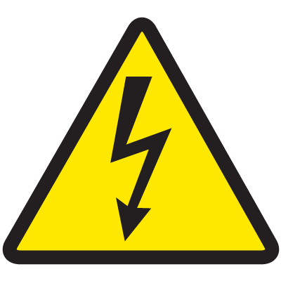

<mat-card>
  <mat-tab-group>
    <mat-tab>
      <ng-template mat-tab-label>
        <mat-icon class="example-tab-icon">wb_sunny</mat-icon>
        <p (click)="weather()"><br />Temperature</p>
      </ng-template>
      <div *ngIf="chart">
        <canvas id="canvas">{{ chart }}</canvas>
      </div>
    </mat-tab>
    <mat-tab>
      <ng-template mat-tab-label>
        <mat-icon class="example-tab-icon">layers</mat-icon>
        <p (click)="power()"><br />Panels Production</p>
      </ng-template>
      <div class="container content">
        
        <h3 class="alert-message">
          You have to pocess panels and become a producer to access this
          functionality
        </h3>
      </div>
    </mat-tab>
  </mat-tab-group>
</mat-card>
